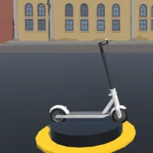
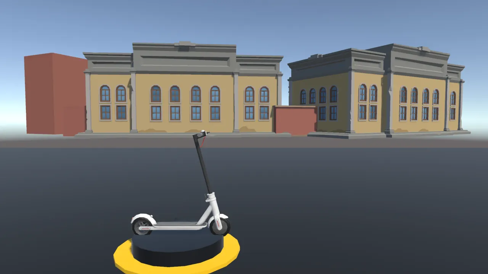
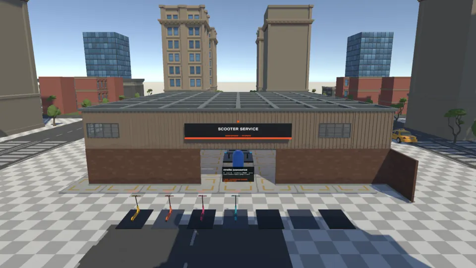
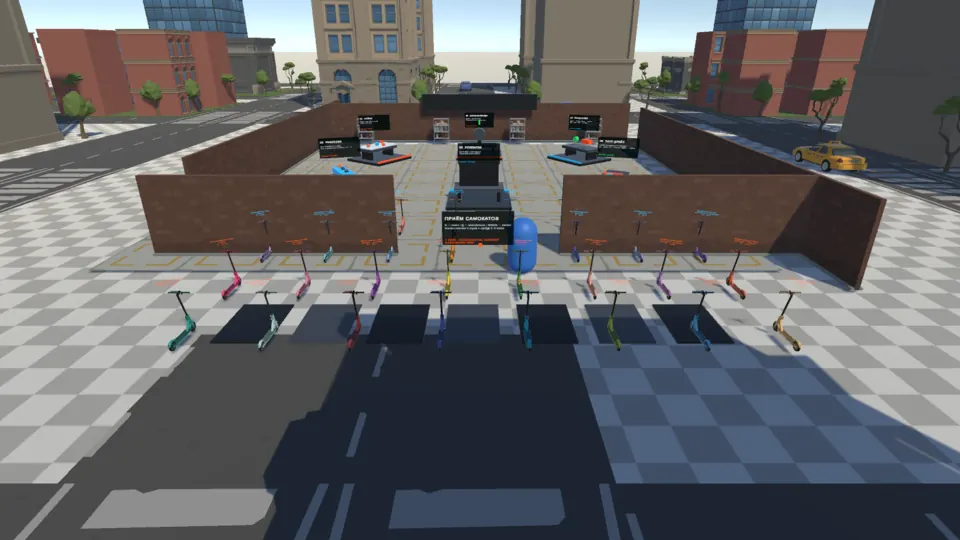
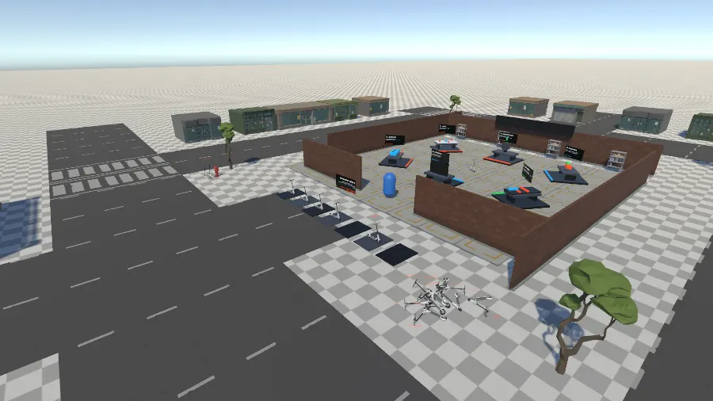

Six workstations
Wash, balance, install, disassemble, paint and test-drive stations each turn a repair into a short task with mouse and keyboard.

Scooter Mechanic SimulatorWillowinWorlds game pageFix scooters, one station at a time.
A first-person repair shop prototype. Customer scooters ride in from the city, each one needs a job or two at the right station, and every finished scooter pays.
A workshop scene with six stations, scooter pickup and riding, a day cycle, saves and a ten-language menu is built in the Unity project, and there is no public build yet.
In collaboration with Render Software Studio

Customer scooters ride in from four city entrances and park by the reception line. Pick one up and carry it into the garage.
Each scooter has a repair card with one or two jobs. Walk to the matching station and play its short hands-on task.
The last finished job pays out and the scooter is ready to carry back out of the garage. The HUD tracks the day, your money and reputation.
Wash, balance, install, disassemble, paint and test-drive stations each turn a repair into a short task with mouse and keyboard.
Customer scooters drive in from four entrances to a reception line, and extra ones pile up when the line is full.
Scooters can be picked up and carried with E, or ridden: Q to mount, A and D to steer, Space to kick, S to brake.
Every scooter carries a one- or two-step repair card, and a station only accepts the step the card asks for.
A workshop day lasts ten real minutes. Progress saves to slots, with an autosave every second day.
The main menu and options offer ten languages, difficulty and separate music and effects volume.
These are goals for the project, not release dates.
Captures from the Unity project.



A first-person repair shop game. You carry customer scooters into a garage, complete short hands-on tasks at six stations and get paid for finished jobs.
It is a prototype with keyboard and mouse controls. There is no public build, store page or release date yet.
Follow WillowinWorlds on the social channels linked on this page, or email willowinworlds@gmail.com to ask for updates on Scooter Mechanic Simulator.
Voting will open on the studio's channels, so following WillowinWorlds is the way to take part.